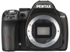

器材库 > APS及其以下画幅可换镜头数码相机 > K-50

规格总览
产品类型
APS画幅可换镜头数码相机
发布日期
2013-06-13
厂家推荐价格
70,000.00 （日元）
影像规格
影像传感器
CMOS
影像传感器尺寸
23.7×15.7mm
总像素
1649万
有效像素
1628万
影像处理器
PRIME M成像引擎
色彩空间
sRGB, AdobeRGB
最大解像度
4928×3264
静态图像尺寸
JPEG：16M（4928×3264）、12M（4224×2816）、8M( 3456×2304) 、5M（2688×1792） RAW：16M（4928×3264）
静态图像格式
JPEG, RAW
静态图像质量
最佳, 较好, 好
画幅比
3:2
短片尺寸
1920×1080@30fps, 1280×720@60fps
短片格式
MPEG4-AVC/H.264
防抖系统
传感器位移
除尘系统
传感器位移，低通滤镜上SP涂层
镜头和对焦
镜头卡口
Pentax AF
对焦系统类型
TTL相位匹配11点宽区（9点十字型）自动对焦系统（SAFOX IXi+）
对焦模式
AF.A, AF.S, AF.C, MF
自动对焦点选择
自动, 手动, 固定在中央的焦点
AF辅助灯
有
手动对焦
支持
曝光控制
测光系统
77区TTL全开光圈测光系统
测光模式
中央重点测光, 多分区评价测光, 点测光
测光范围
0EV~22EV
曝光模式
P（程序自动曝光）, B门, 感光度优先, A（光圈优先自动曝光）, S（快门速度优先自动曝光）, M（手动测光曝光）, 用户模式
场景模式
夜景, 海景及雪地, 食物, 儿童, 宠物, 烛光, 博物馆, 舞台, 夜景快照, 人像, 风景, 微距, 运动, 夜间人像, 逆光, 夜景HDR（JPG格式）
快门类型
电子控制，纵走式，焦平面快门
快门速度
1/6000 ～ 30秒, B门
曝光补偿
±5EV以1/3或1/2EV级调整
自动曝光锁
有
自动包围曝光
3幅, 最多±2EV（以1/3或1/2步长调整）
ISO感光度
100, 51200
白平衡
日光, 白炽灯, 闪光灯, 色温调节, 阴天, 荧光灯, 阴影, CTE, 自动, 手动白平衡
自拍
12秒, 2秒
连拍
高速连拍约6fps/ 低速连拍约3fps
闪光灯
内置闪光灯
弹出式
闪光模式
慢速同步, 减轻/消除红眼, 减轻红眼慢速同步, 开启
闪光指数
12m（ISO 100）
闪光补偿
-2 至 +1EV以1/2EV级调整
取景器/显示屏
取景器
五棱镜取景器
取景范围
100%
取景放大倍率
0.92倍
屈光度调节范围
-2.5m ～ 1.5m
景深预视
有
LCD类型
彩色TFT LCD
LCD尺寸
3.0英寸
LCD像素
92万
Live View
有
文件输入/输出
存储卡
SD/SDHC, SDXC
数据接口
USB2.0
视频/音频接口
Video 输出 (NTSC/PAL)
支持打印协议
DPOF, PIM
电源
电池
充电式锂电池D-LI109
续航能力
可拍摄约710张照片
外接电源
AC适配器（另购）
机身规格
颜色
黑色, 粉红色, 白色
尺寸
129×96.5×70mm
重量
590g
其它
用户自选功能
23种
配件端口
热靴
支持语言
中文（简体）, 中文（繁体）, 英语, 日语, 捷克语, 丹麦语, 荷兰语, 芬兰语, 法语, 德语, 意大利语, 韩语, 波兰语, 葡萄牙语, 俄语, 西班牙语, 瑞典语, 土耳其语, 匈牙利语, 希腊语
工作温度
-10 - 40℃
UVfilter2015-08-15 08:124.63 分
操作性 4.50功能性 4.50美观性 4.00趣味性 4.50耐用性 5.00性价比 5.00解像力 4.50色彩还原 5.00
vanille2014-06-12 17:154.44 分
操作性 4.50功能性 4.50美观性 4.00趣味性 4.50耐用性 4.50性价比 4.50解像力 4.50色彩还原 4.50
阿薰2014-06-12 17:124.44 分
操作性 4.50功能性 4.50美观性 4.50趣味性 4.50耐用性 4.50性价比 4.50解像力 4.00色彩还原 4.50
arondes2013-10-13 09:334.75 分
操作性 5.00功能性 5.00美观性 5.00趣味性 5.00耐用性 4.50性价比 4.50解像力 4.50色彩还原 4.50
产品图 / 样片
评测 / 相关文章
- 详细内容 （存档）
- ［试用］宾得K-50防水套机入手简评及与K-r对比 （存档）
- ［资讯］宾得数码单反新品K-500图赏 （存档）
相关文章
- ［试用］宾得K-50防水套机入手简评及与K-r对比 （存档）
- ［资讯］宾得数码单反新品K-500图赏 （存档）
- ［资讯］宾得K-50 （存档）